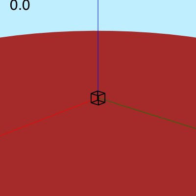

Views and perspective
Eyepoint, centerpoint...
Thebes has a simple view of the world. There's a global "world", which is created when you start using it. It's a good idea to check and/or set the viewing parameters when you start a new Luxor document, in case you're inheriting anything odd from a previous run.
Here are the functions that control your view of the 3D scene:
helloworld()eyepoint()centerpoint()perspective()
The first one is a useful one to remember: it simply resets all the viewing parameters to the defaults.
The eyepoint() function moves the eyepoint, and centerpoint() changes the location that is the center of your view. There's also an uppoint() function, usually sitting above centerpoint, which determines which way is up.
So, to see the side view of the helix, continued from the previous chapter, we can just lower our viewpoint a bit, from the default 100 in z down to 50:
helix = [Point3D(150cos(θ), 150sin(θ), 5θ) for θ in 0:π/48:4π]
setline(0.5)
eyepoint(500, 500, 50)
axes3D()
for p in helix
pin(p, Point3D(0, 0, p.z))
end
finish()
Perspective
As yet we've seen no perspective. The defaut value of the perspective parameter, as returned by perspective(), is 0. This means that there's none of that foreshortening or converging of lines that head off into the distance. And if you look at a cube, it has that familiar unrealistic appearance of non-perspective view.
function makecube()
cube = [
Point3D(1, 1, -1),
Point3D(1, -1, -1),
Point3D(-1, -1, -1),
Point3D(-1, 1, -1),
Point3D(1, 1, 1),
Point3D(1, -1, 1),
Point3D(-1, -1, 1),
Point3D(-1, 1, 1)]
r = Point3D[]
for e in (
[1, 2, 3, 4, 1],
[5, 6, 7, 8, 5],
[5, 1, 2, 6, 7],
[7, 3, 4, 8, 5])
append!(r, cube[e])
end
return r
end
pin(50makecube())
finish()
This little animation views the cube and changes the perspective slowly from 0 up to 1400.

As the value of perspective increases, the apparent magnification increases, and parallel lines will start to converge.
function makecube()
cube = [
Point3D(1, 1, -1),
Point3D(1, -1, -1),
Point3D(-1, -1, -1),
Point3D(-1, 1, -1),
Point3D(1, 1, 1),
Point3D(1, -1, 1),
Point3D(-1, -1, 1),
Point3D(-1, 1, 1)]
r = Point3D[]
for e in (
[1, 2, 3, 4, 1],
[5, 6, 7, 8, 5],
[5, 1, 2, 6, 7],
[7, 3, 4, 8, 5])
append!(r, cube[e])
end
return r
end
eyepoint(200, 50, 100)
perspective(150)
pts = pin(50makecube())
sethue("red")
setline(0.1)
for p1 in pts
for p2 in pts
p1 == p2 && continue
rule(p1, slope(p1, p2))
end
end
And there are enough converging parallel lines there to give an ancient Egyptian architect nightmares.
Orbits
To fly around the scene, you can just move the eyepoint around:
using Thebes, Luxor, Colors
function frame(scene, framenumber, object)
background("antiquewhite")
setlinejoin("bevel")
sethue("grey70")
carpet(150)
setline(1.0)
setopacity(0.7)
eased_n = rescale(scene.easingfunction(framenumber, 0, 1,
scene.framerange.stop), 0, 1, 0, 2π)
eyepoint(150cos(eased_n), 150sin(eased_n), 30)
pin(object)
axes3D()
end
w = h = 400
movie1 = Movie(w, h, "3D movie")
function main()
include("data/moreobjects.jl")
object = make(cuboctahedron)
setscale!(object, 60, 60, 60)
animate(movie1,
Scene(movie1, (s, f) -> frame(s, f, object),
1:150,
easingfunction=easeinoutsine),
pathname="animation.gif")
end
main()